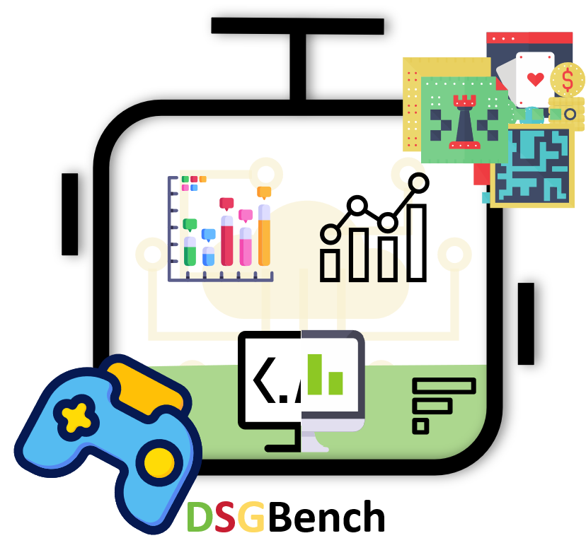
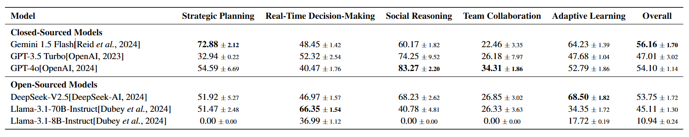

DSGBench: A
Diverse
Strategic
Game Benchmark for Evaluating LLM-based Agents in Complex
Decision-Making Environments

Abstract
Large Language Model~(LLM) based agents have been increasingly popular in solving complex and dynamic tasks, which requires proper evaluation systems to assess their capabilities. Nevertheless, existing benchmarks usually either focus on single-objective tasks or use overly broad assessing metrics, failing to provide a comprehensive inspection of the actual capabilities of LLM-based agents in complicated decision-making tasks. To address these issues, we introduce DSGBench, a more rigorous evaluation platform for strategic decision-making. Firstly, it incorporates six complex strategic games which serve as ideal testbeds due to their long-term and multi-dimensional decision-making demands and flexibility in customizing tasks of various difficulty levels or multiple targets. Secondly, DSGBench employs a fine-grained evaluation scoring system which examines the decision-making capabilities by looking into the performance in five specific dimensions and offering a comprehensive assessment in a well-designed way. Furthermore, DSGBench also incorporates an automated decision-tracking mechanism which enables in-depth analysis of agent behaviour patterns and the changes in their strategies. We demonstrate the advances of DSGBench by applying it to multiple popular LLM-based agents and our results suggest that DSGBench provides valuable insights in choosing LLM-based agents as well as improving their future development.

The overall framework of DSGBench. The framework consists of (1) a multi-game environment supporting both asynchronous and synchronous interactions; (2) fine-grained capability metrics for strategic planning, real-time decision-making, and team collaboration; and (3) decision trajectory tracking tools that collaboratively analyze agents' decision-making processes. Through observation-to-prompt and response-to-action loops, DSGBench enables systematic evaluation of LLM-based agents in dynamic, multi-agent scenarios.
Code Architecture of DSGBench
The evaluation framework is an automated and simplified platform designed to evaluate LLM-based agents uniformly. The main component of the framework is the GameManager, which coordinates the initialization and execution phases. It is responsible for configuring the environment and the agent, ensuring a smooth game flow and accurately tracking the decision trajectory. The process starts with the DataCollector, which is responsible for collecting the basic configuration of the game and the agent, laying the foundation for accurate evaluation. This data is then fed into the modules GameEnv and HistoryTracker. While the former manages the action and observation space and enables seamless interaction between the agent and its environment, the latter captures the detailed game history and allows for in-depth analysis of the decision-making process and strategic choices.
Main Results
Conclusion
We introduce DSGBench, a comprehensive benchmark designed to evaluate the strategic decision-making capabilities of LLM-based agents in diverse and dynamic gaming environments. For the first time, we assess LLM-based agents based on key cognitive decision-making dimensions from human cognition and propose an integrated evaluation approach. Under standardized settings, we systematically evaluate the performance of six representative LLM-based agents in complex strategic environments. Through fine-grained evaluation metrics and decision trajectory analysis, we reveal the strengths and weaknesses of agents in various scenarios. Experimental results show significant differences across multiple ability dimensions. Additionally, we have established a unified evaluation framework that supports the integration of new games and the customization and expansion of new game scenarios. We hope that DSGBench will see widespread application, as gaming itself is an evolving process. Agents can continuously learn and evolve through interaction with opponents, making game-based evaluation methods virtually limitless in potential.
BibTeX
@misc{tang2025dsgbenchdiversestrategicgame,
title={DSGBench: A Diverse Strategic Game Benchmark for Evaluating LLM-based Agents in Complex Decision-Making Environments},
author={Wenjie Tang and Yuan Zhou and Erqiang Xu and Keyan Cheng and Minne Li and Liquan Xiao},
year={2025},
eprint={2503.06047},
archivePrefix={arXiv},
primaryClass={cs.AI},
url={https://arxiv.org/abs/2503.06047},
}